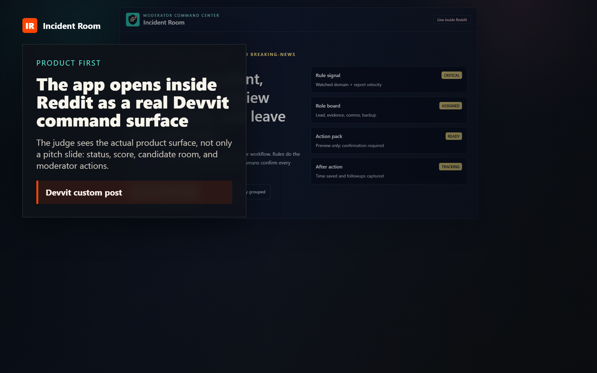
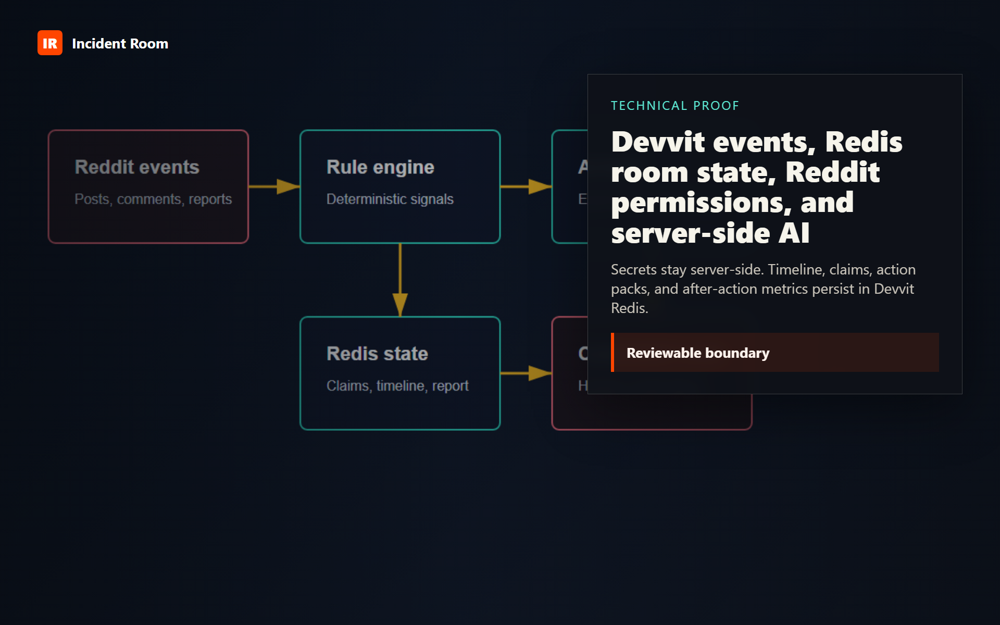
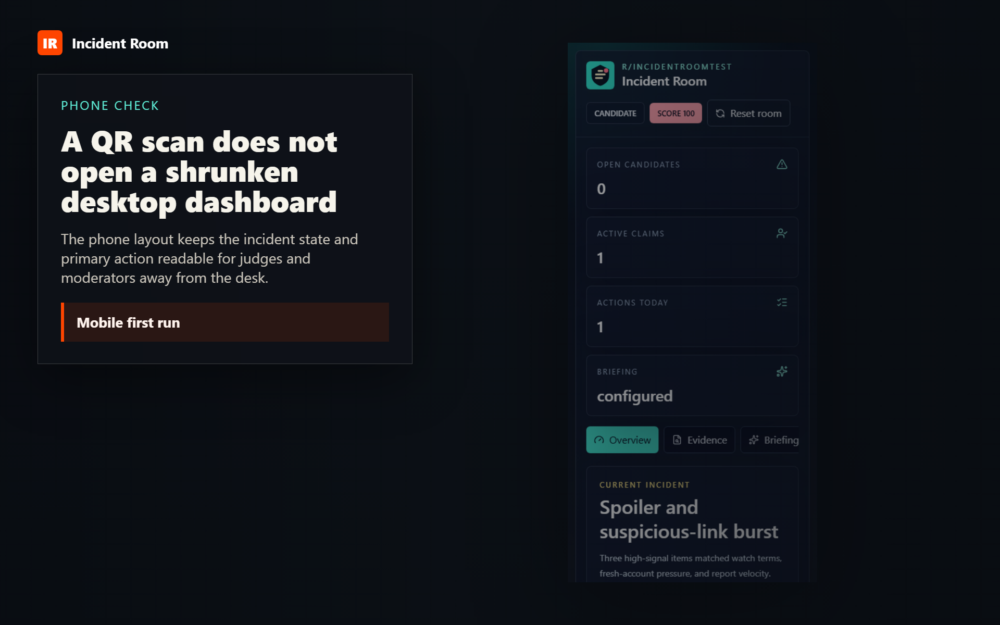
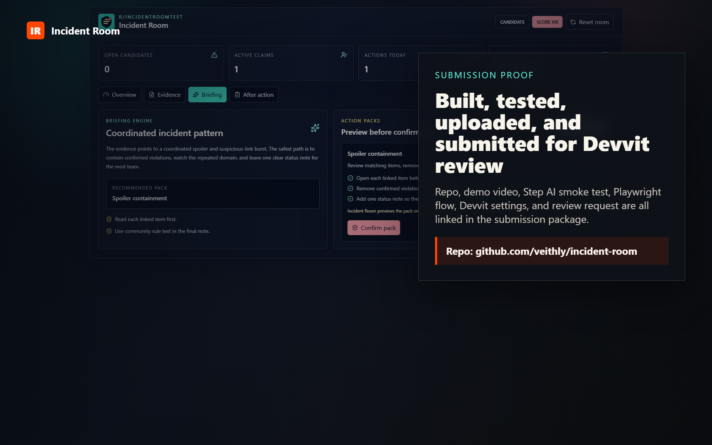
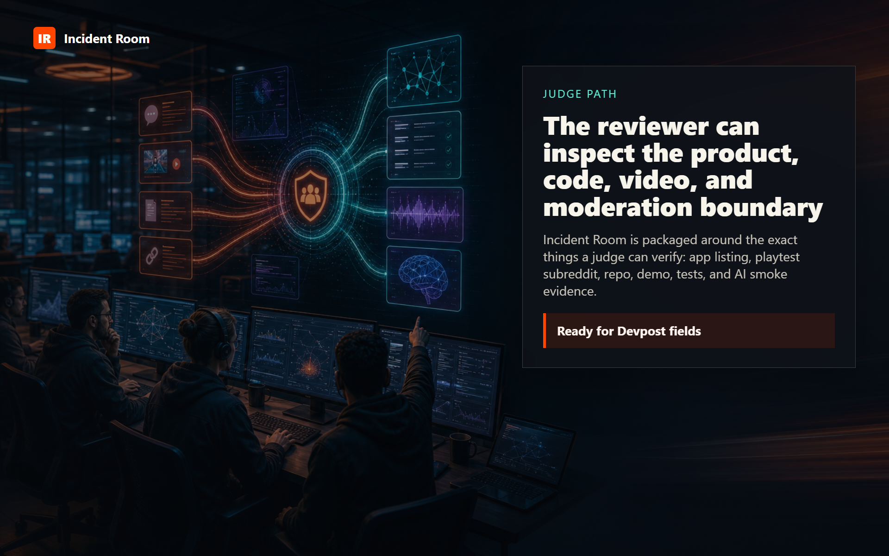
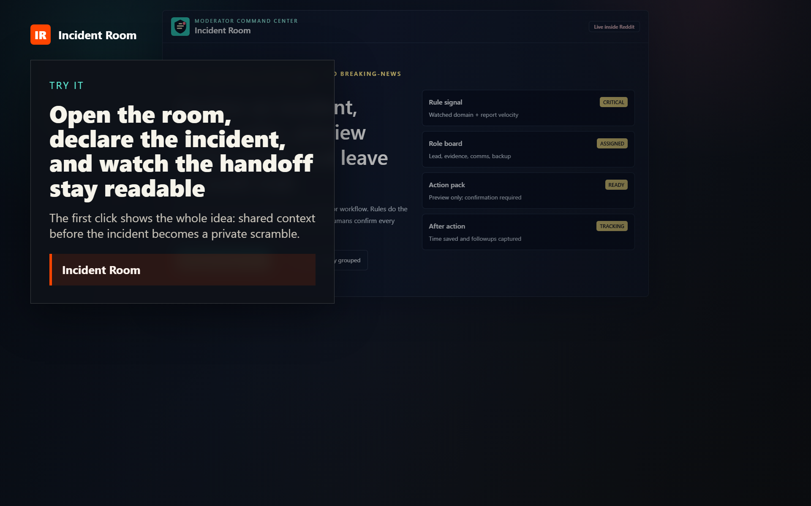

The moderator problem
Incident Room combined pitch/demo

Product first
The app opens inside Reddit as a real Devvit command surface
15.64sLive demo
Declare, claim, brief, preview, confirm
42.27sRules plus AI
Rules score evidence; Step AI explains what the room is seeing
19.5s
Technical proof
Devvit events, Redis room state, Reddit permissions, and server-side AI
17.08s
Phone check
A QR scan does not open a shrunken desktop dashboard
12.71s
Submission proof
Built, tested, uploaded, and submitted for Devvit review
18.95s
Judge path
The reviewer can inspect the product, code, video, and moderation boundary
28.91s
Try it